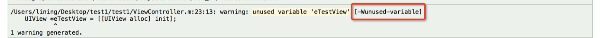

attribute(xx)是clang提供的能让开发者在编译过程中参与一些源码控制的方法
attribute((format(NSString,F,A)))格式化字符串
因为此时已经是C语言级别 String不需要加
@
比如NSLog的用法
FOUNDATION_EXPORT void NSLog(NSString *format, ...) NS_FORMAT_FUNCTION(1,2) NS_NO_TAIL_CALL;
#if !defined(NS_FORMAT_FUNCTION)
#if (__GNUC__*10+__GNUC_MINOR__ >= 42) && (TARGET_OS_MAC || TARGET_OS_EMBEDDED)
#define NS_FORMAT_FUNCTION(F,A) __attribute__((format(__NSString__, F, A)))
#else
#define NS_FORMAT_FUNCTION(F,A)
#endif
#endif
attribute((deprecated(s)))版本弃用提示
在编译过程中提示开发者该方法已经被弃用
@property (nonatomic, strong) NSString *testProperty __attribute__((deprecated("该属性已经不能用了")));
- (void)testDeprecatedMethod __attribute__((deprecated("该方法已经被弃用")));
- (void)deprecatedMethod DEPRECATED_ATTRIBUTE; //也可以直接使用DEPRECATED_ATTRIBUTE这个系统定义的宏
attribute((availability(os,introduced=m,deprecated=n, obsoleted=o,message=“” VA_ARGS))) 指明使用版本范围
- (void)method __attribute__((availability(ios,introduced=3_0,deprecated=6_0,obsoleted=7_0,message=“iOS3到iOS7版本可用，iOS7不能用”)));
attribute((unavailable(s))) 方法不可用提示
- (void)testUnvailableMethod __attribute__((unavailable("该方法已经不能使用")));
attribute((unused))
没有被使用也不报警告
NSString *str __attribute__((unused));
NSInteger reuslt __attribute__((unused)) = [vc testResultUnused];
attribute((warn_unused_result))
不使用该方法的返回值就会被警告
- (NSInteger)testResultUnused __attribute__((warn_unused_result));
attribute((availability(swift, unavailable, message=_msg)))
OC的方法 不能在swift中使用
attribute((cleanup(…))) 作用域结束时自动执行一个指定方法
作用于结束包括大括号结束，return，goto，break，exception等情况。这个动作是先于这个对象的dealloc调用的
//修饰一个变量 在他的作用域结束时 自动执行该方法
}
NSString *testCleanUp __attribute__((cleanup(testLastMethod) unused)) = @"testCleanUp";
}
int testLastMethod(__strong NSString **str) {
return 10;
}
attribute((overloadable)) 方法重载
能够在 c 的函数上实现方法重载。即同样的函数名函数能够对不同参数在编译时能够自动根据参数来选择定义的函数
__attribute__((overloadable)) void printArgument(int number){
NSLog(@“Add Int %i”, number);
}
__attribute__((overloadable)) void printArgument(NSString *number){
NSLog(@“Add NSString %@“, number);
}
__attribute__((overloadable)) void printArgument(NSNumber *number){
NSLog(@“Add NSNumber %@“, number);
}
attribute((objc_designated_initializer)) 指定内部实现的初始化方法
也可以使用OC中定义的宏 NS_DESIGNATED_INITIALIZER
即指定该类的指定构造器函数，使用规则
- 该类的指定构造器函数必须调用父类的指定构造器函数
- 该类的遍历构造器函数必须最终执行该类的指定构造器函数
attribute((objc_subclassing_restricted)) 指定不能有子类
指定该类不能有子类，类似java中的final函数
__attribute__((objc_subclassing_restricted))
@interface ViewController : UIViewController
@end
attribute((objc_requires_super)) 子类继承必须调用 super
//子类重写该方法如果不调用super 会有警告⚠️
- (void)testInheritanceMethod __attribute__((objc_requires_super));
attribute((const)) 重复调用相同数值参数优化返回
用于数值类型参数的函数，多次调用相同的数值型参数，返回是相同的，只在第一次需要进行运算，后面只返回第一次的结果，这是编译器的一种优化处理
attribute((constructor(PRIORITY))) 和 attribute((destructor(PRIORITY)))
PRIORITY 是指执行的优先级，main 函数执行之前会执行 constructor，main 函数执行后会执行 destructor，+load 会比 constructor 执行的更早点，因为动态链接器加载 Mach-O 文件时会先加载每个类，需要 +load 调用，然后才会调用所有的 constructor 方法。
通过这个特性，可以做些比较好玩的事情，比如说类已经 load 完了，是不是可以在 constructor 中对想替换的类进行替换，而不用加在特定类的 +load 方法里。
Clang警告处理
#pragma clang diagnostic push
#pragma clang diagnostic ignored “-Wdeprecated-declarations”
sizeLabel = [self sizeWithFont:font constrainedToSize:size lineBreakMode:NSLineBreakByWordWrapping];
#pragma clang diagnostic pop
attribute((constructor)) 在main函数之前调用
attribute((destructor)) 在main函数执行之后 或者exit()后被自动执行
文件级:在源代码文件中诊断(忽略/警告)
语法:
#pragma clang diagnostic [error|warning|ignored] "-W<警告选项>"
诊断-忽略:(关闭警告)
#pragma clang diagnostic ignored "-Wunused"
#pragma clang diagnostic ignored "-Wunused-parameter"
诊断-警告:(开启警告)
#pragma clang diagnostic warning "-Wunused"
#pragma clang diagnostic warning "-Wunused-parameter"
诊断-错误:(开启警告-升级为错误)
#pragma clang diagnostic error "-Wunused"
#pragma clang diagnostic error "-Wunused-parameter"
用法:
在文件开头处关闭警告,在文件结尾出再开启警告,这样可以忽略该文件中的指定警告.
对于项目中的警告我们可以右键警告revela in log 查看编译时的警告

就可以根据具体警告类型进行忽略
补充: 项目级别忽略警告
在项目的Build Settings中也可以设置忽略某种或者多种类型的警告,忽略整个项目的警告类型
也可以指定debug 或者 release
选项格式: -W[no-]<警告选项>
如 : -Wno-unused-parameter # no- 表示诊断时忽略这个警告
通过 CocoaPods 给项目导入了一些第三方库，这些库里面或多或少会有些警告，想消除这些警告，很简单，只需在 Podfile 中加上这一句 inhibit_all_warnings!，所有通过 CocoaPods 安装的第三库的警告就没有了。